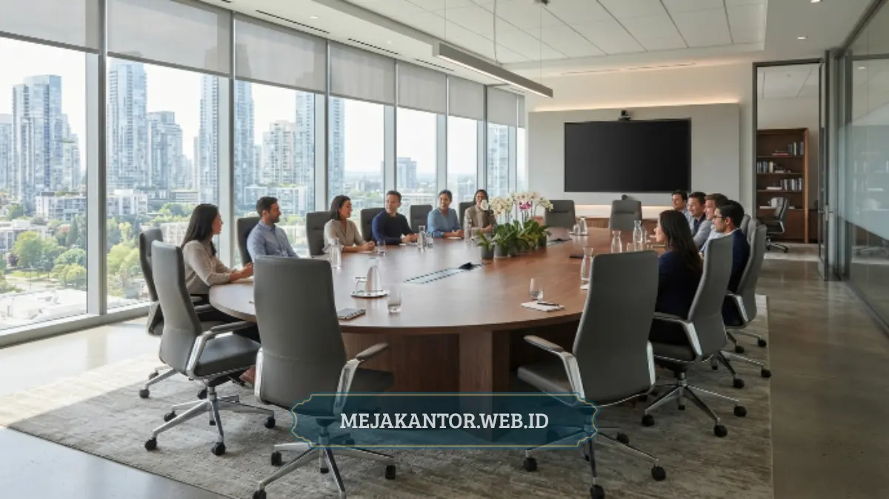

Meja rapat minimalis tersedia dalam beberapa jenis utama, yaitu bentuk bundar, oval, rectangular, dan modular, yang masing-masing memiliki kapasitas serta kecocokan ruangan berbeda.
Pemilihan jenis yang tepat membantu ruang rapat terlihat lebih rapi sekaligus mendukung kenyamanan diskusi tim dalam mengambil keputusan-keputusan strategis.
- Meja bundar cocok untuk ruang rapat kecil berkapasitas empat hingga enam orang.
- Meja oval dan rectangular lebih sesuai untuk ruang rapat kapasitas menengah hingga besar.
- Meja modular memberi fleksibilitas pengaturan ulang sesuai kebutuhan acara.
- Ukuran meja harus disesuaikan dengan luas ruangan agar sirkulasi tetap nyaman.
- Material kayu lapis dan metal ringan banyak dipilih untuk tampilan modern.
Daftar Isi Artikel
- Apa Saja Jenis Meja Rapat Minimalis?
- Apa Kelebihan Meja Bundar untuk Ruang Rapat Kecil?
- Kapan Sebaiknya Memilih Meja Oval atau Rectangular?
- Berapa Ukuran Meja Rapat yang Ideal Berdasarkan Kapasitas?
- Bagaimana Menyesuaikan Ukuran Meja dengan Luas Ruangan?
- Material Apa yang Digunakan pada Meja Rapat Minimalis?
- Apa Kesalahan Umum saat Memilih Meja Rapat Minimalis?
- Bagaimana Menghindari Kesalahan Tersebut Sejak Awal?
Apa Saja Jenis Meja Rapat Minimalis?
Jenis meja rapat minimalis yang umum digunakan meliputi meja bundar, oval, rectangular, dan modular, dengan masing-masing bentuk menawarkan keunggulan berbeda sesuai kebutuhan ruang dan jumlah peserta.
Meja bundar memberi kesan setara antar peserta karena tidak ada posisi kepala meja yang dominan, sehingga sering dipilih untuk diskusi tim yang lebih kolaboratif dan terbuka.
Meja oval memberi kesan elegan dan lebih efisien dalam menampung banyak peserta dibanding meja bundar dengan diameter setara. Sementara itu, meja rectangular cenderung dipilih untuk ruang rapat formal atau presentasi dengan satu titik fokus di ujung meja.
Meja modular menonjol karena bisa dirangkai ulang sesuai kebutuhan kapasitas ruangan yang berubah-ubah, memberikan solusi dinamis untuk kantor dengan aktivitas pertemuan yang beragam.
Apa Kelebihan Meja Bundar untuk Ruang Rapat Kecil?
Meja bundar memberikan kelebihan berupa efisiensi ruang dan kesan diskusi yang lebih setara, karena tidak ada posisi meja yang terasa lebih dominan dibanding posisi lainnya.
Bentuk ini juga mengurangi risiko sudut tajam yang dapat mempersempit jalur sirkulasi pada ruangan berukuran kecil, sehingga lebih aman dan nyaman digunakan dalam ruang terbatas.
Kapan Sebaiknya Memilih Meja Oval atau Rectangular?
Meja oval atau rectangular sebaiknya dipilih ketika ruang rapat digunakan untuk kapasitas menengah hingga besar, terutama untuk rapat formal dengan presentasi atau sesi negosiasi yang membutuhkan titik fokus jelas.
Bentuk memanjang pada kedua jenis meja ini juga memudahkan penempatan perangkat presentasi seperti layar monitor atau proyektor di salah satu ujung ruangan tanpa mengganggu jarak pandang peserta lain.

Berapa Ukuran Meja Rapat yang Ideal Berdasarkan Kapasitas?
Ukuran meja rapat yang ideal umumnya mengikuti alokasi enam puluh hingga tujuh puluh lima sentimeter lebar per orang, sehingga meja untuk enam orang membutuhkan panjang sekitar dua hingga dua setengah meter.
Perhitungan ini penting agar setiap peserta memiliki ruang gerak yang cukup untuk meletakkan laptop, dokumen, atau perangkat presentasi tanpa berdesakan dengan rekan di sampingnya.
Untuk ruang rapat direksi dengan kapasitas sepuluh hingga dua belas orang, meja oval atau rectangular sepanjang tiga hingga empat meter umumnya lebih sesuai dan memberikan kenyamanan postur yang maksimal.
Bagaimana Menyesuaikan Ukuran Meja dengan Luas Ruangan?
Ukuran meja perlu disesuaikan dengan luas ruangan dengan menyisakan jarak minimal enam puluh hingga sembilan puluh sentimeter antara tepi meja dan dinding atau furnitur lain agar sirkulasi tetap lancar.
Mengukur luas ruangan secara akurat sebelum menentukan jenis meja dapat mencegah kesalahan pembelian, terutama untuk ruang rapat dengan bentuk tidak simetris atau memiliki elemen struktural seperti tiang penyangga.
Material Apa yang Digunakan pada Meja Rapat Minimalis?
Material yang umum digunakan pada meja rapat minimalis meliputi kayu lapis, particle board berlapis melamin, dan kombinasi kaki metal ringan untuk menopang permukaan meja secara stabil.
Kayu lapis menawarkan tampilan natural dan daya tahan yang baik terhadap beban harian, sementara particle board berlapis melamin memberikan variasi warna lebih luas dengan harga yang cenderung lebih terjangkau.
Kombinasi rangka metal pada kaki meja membantu menjaga stabilitas struktur, terutama pada meja berukuran panjang yang menopang banyak peserta sekaligus saat rapat kerja intensif.
Apa Kesalahan Umum saat Memilih Meja Rapat Minimalis?
Kesalahan umum saat memilih meja rapat minimalis meliputi mengabaikan jarak sirkulasi, memilih material yang tidak sesuai dengan intensitas pemakaian, dan tidak mempertimbangkan akses kabel untuk perangkat elektronik.
Meja yang terlalu besar untuk ruangan sering kali menyisakan jarak sirkulasi kurang dari standar minimal, sehingga peserta kesulitan keluar masuk ruangan saat rapat berlangsung.
Kesalahan lain adalah memilih material yang kurang tahan terhadap kelembapan pada ruangan tanpa ventilasi baik, yang dapat mempercepat kerusakan permukaan meja dalam pemakaian jangka panjang.
Pertimbangan akses kabel juga sering terlewat, padahal ruang rapat modern membutuhkan sambungan listrik untuk laptop dan proyektor. Meja dengan lubang kabel terintegrasi dapat mencegah tampilan kabel berantakan di atas meja.
Bagaimana Menghindari Kesalahan Tersebut Sejak Awal?
Kesalahan pemilihan meja rapat dapat dihindari dengan mengukur ruangan secara akurat, menentukan kapasitas peserta rutin, dan mempertimbangkan kebutuhan akses kabel sebelum menentukan jenis serta material meja.
Melibatkan pengukuran detail ruangan sejak tahap perencanaan membantu memastikan meja yang dipilih benar-benar sesuai dengan dimensi ruangan yang tersedia, sehingga mengurangi risiko harus mengganti furnitur dalam waktu dekat setelah pembelian.
Memilih jenis dan ukuran meja rapat minimalis yang tepat sangat menentukan kenyamanan serta efisiensi ruang rapat kantor secara keseluruhan. Sesuaikan bentuk meja dengan kapasitas ruangan, dan pertimbangkan material yang selaras dengan kebutuhan daya tahan jangka panjang.
Untuk mendapatkan meja rapat minimalis dengan berbagai pilihan bentuk dan ukuran sesuai kebutuhan kantor Anda, kunjungi mejakantor.web.id dan temukan meja rapat yang paling sesuai untuk ruang kerja Anda.

Mega Anggun (Ega)
Penulis Konten & Spesialis Penataan Interior Kantor. Berpengalaman dalam memberikan tips ergonomi dan memilih furnitur terbaik untuk menunjang produktivitas kerja.